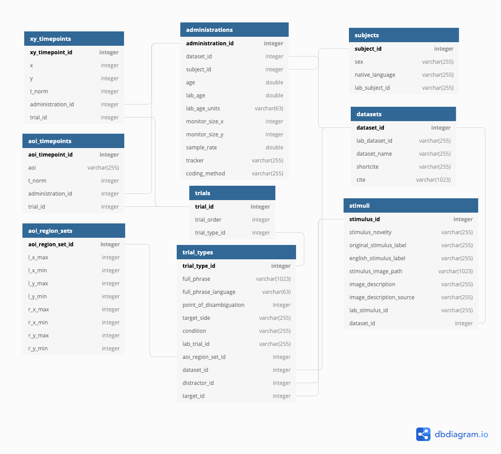

How Peekbank works
The Peekbank framework has three components:
- Processing raw experimental datasets. Each contributed dataset gets a reproducible import script in peekbank-data-import that converts the lab’s raw eye-tracking exports into the standardized peekds format: times re-centered so 0 = target-word onset, gaze resampled to 40 Hz (25 ms samples), looks coded to areas of interest (target / distractor / other / missing). Validators in peekbankr check every table against the schema. Raw inputs and processed outputs are archived in the peekbank_files dataset.
- The versioned database. A release build assigns database-wide ids across datasets and publishes the relational tables as a new version of the peekbank dataset on Redivis. Every historical release remains available (see Releases); Peekbank archives all contributed data, including trials and participants the original labs excluded, so users can apply their own criteria.
- Interfaces. The peekbankr R package provides high-level accessors; this site’s interactive explorers compute standard analyses in your browser; and the Redivis pages support queries, previews, and exports in any language. See Data Access for all of these.
Data schema
Peekbank stores every dataset in a common tidy format so cross-dataset analyses are easy. Records are linked by numeric ids (arrows below):
- datasets — one row per contributed study: citation info, lab metadata
- subjects — one row per (de-identified) child; links longitudinal sessions
- administrations — one experimental session: age at test, coding method, tracker and monitor properties
- stimuli — word–image pairings, including novelty status
- trial_types — the designed trials: target/distractor stimuli and sides, carrier phrase, point of disambiguation, condition
- trials — the specific trials a child completed, in order
- aoi_region_sets — screen-coordinate definitions of the areas of interest (eye-tracker datasets)
- aoi_timepoints — looks coded to target/distractor/other/missing at 40 Hz, time-centered on target-word onset
- xy_timepoints — raw gaze coordinates at 40 Hz (eye-tracker datasets)

Codebook
Every field in every table, from the team’s codebook. Search by table, field, or description.
Releases
Peekbank is released in named versions so analyses can be reproduced exactly; connect_to_peekbank(db_version = ...) pins one, and each version on Redivis carries a release_info table naming its release.
| Release | Redivis version | Notes |
|---|---|---|
| 2026.1 | v1.4 | Current release: 44 datasets. Used by Frank et al. (2026), eLife and Boyce et al. (2026). |
| 2025.2 | v1.3 | Incremental update to 2025.1. |
| 2025.1 | v1.2 | Reproduces the preprint of Frank et al., eLife. |
| 2022.1 | v1.1 | Citable version for Zettersten et al. (2023), BRM; identical data to 2021.1. |
| 2021.1 | v1.0 | Initial release, for Zettersten et al. (2021), CogSci. |
For heavy local use, download whole tables from the Redivis dataset page (exports to parquet/CSV) or via the clients — the MySQL-era mysqldump instructions are obsolete.
Getting started
The fastest route is the Data Access page: install peekbankr, connect, and pull tidy tables in a few lines. For a guided tour of the analyses these data support, open any page in the Analyses menu — every plot has a Data tab with a CSV download of exactly what is shown.